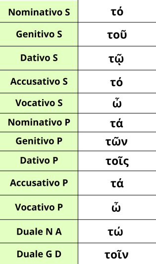

L'articolo neutro è una tipologia di articoli dedicata ai sostantivi neutri.
In ordine da Nominativo a Vocativo, da Singolare a Duale è: τό, τοῦ, τῷ, τό, τώ, τἀ, τῶν, τοῖς, τά, τοῖν.
Come avrai potuto notare, essi hanno le stesse caratteristiche nella declinazione dei nomi neutri della seconda declinazione, quindi con i casi diretti (Nominativo, Accusativo e Vocativo) con le stesse terminazioni.
Come già detto di nella pagina di (Introduzione Generale), al vocativo non esiste alcun articolo, se non l'interiezione ὦ.
Infine ricorda un particolare comportamento dell'articolo neutro, ovvero il cosidetto Sostantivo Fantasma. Può capitare infatti che a seguito di un articolo neutro vi sia un sostantivo al genitivo, a sua volta preceduto da un articolo. In questo caso bisogna pensare a quel blocco in modo unico e provando una traduzione molto base col sostantivo Cosa (Es. Τὰ τοῦ πολέμου --> Le cose della guerra). Dopo questa traduzione base si deve cercare di trovare una vera traduzione efficace (Es. Le cose della guerra → Le attività militari). Inoltre se il genitivo riporta un nome di poeta si deve tradurre con il sostantivo Versi (Es. Τὰ τοῦ Ομήρου → I versi di Omero). Se poi invece l'articolo è al singolare si deve tradurre o con il sostantivo Detto oppure con Sentenza (Es. Τὸ τοῦ Δημοδόκου → Il detto di Demodoco)."